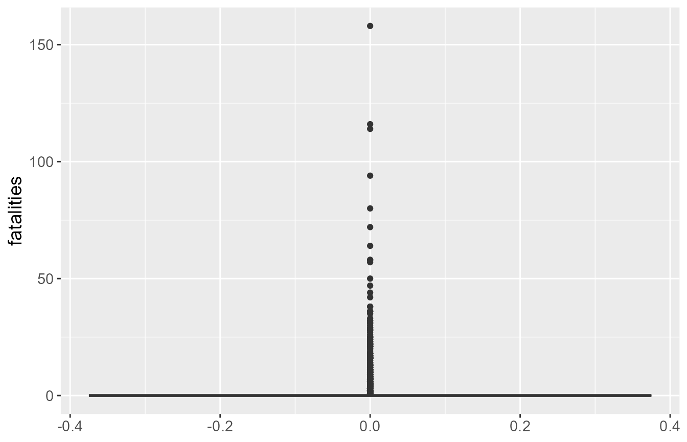

predicttornado-vignette
predicttornado-vignette.RmdThis predicttornado package was created to help with the
data analysis of predicting the number of fatalities using length and
width of tornadoes based on tornado data. It allows you to:
Perform data processing and cleaning easily
Create tailored scatterplots and box plots
Create a linear regression plot, fit it to your data, and gives you model coefficients and intercept
Create accuracy plots
To get started, we load the library:
library(tidyverse)
#> Warning: package 'tidyverse' was built under R version 4.3.2
#> Warning: package 'ggplot2' was built under R version 4.3.3
#> Warning: package 'tidyr' was built under R version 4.3.2
#> Warning: package 'purrr' was built under R version 4.3.2
#> Warning: package 'dplyr' was built under R version 4.3.2
#> Warning: package 'stringr' was built under R version 4.3.2
#> Warning: package 'lubridate' was built under R version 4.3.2
#> ── Attaching core tidyverse packages ──────────────────────── tidyverse 2.0.0 ──
#> ✔ dplyr 1.1.4 ✔ readr 2.1.4
#> ✔ forcats 1.0.0 ✔ stringr 1.5.1
#> ✔ ggplot2 3.5.0 ✔ tibble 3.2.1
#> ✔ lubridate 1.9.3 ✔ tidyr 1.3.0
#> ✔ purrr 1.0.2
#> ── Conflicts ────────────────────────────────────────── tidyverse_conflicts() ──
#> ✖ dplyr::filter() masks stats::filter()
#> ✖ dplyr::lag() masks stats::lag()
#> ℹ Use the conflicted package (<http://conflicted.r-lib.org/>) to force all conflicts to become errors
library(predicttornado)Data: tornado
To explore the functions of the predicttornado package,
we will use tornados.csv that can be found here.
This tornado_data contains a variety of features related
to tornadoes, such as the magnitude, the width of tornadoes, the length
of tornadoes, the number of fatalities and casualities, and the
financial loss.
tornado_data <- read_csv("https://raw.githubusercontent.com/rfordatascience/tidytuesday/a9e277dd77331e9091e151bb5adb584742064b3e/data/2023/2023-05-16/tornados.csv")
#> Rows: 68693 Columns: 27
#> ── Column specification ────────────────────────────────────────────────────────
#> Delimiter: ","
#> chr (2): tz, st
#> dbl (21): om, yr, mo, dy, stf, mag, inj, fat, loss, slat, slon, elat, elon,...
#> lgl (1): fc
#> dttm (1): datetime_utc
#> date (1): date
#> time (1): time
#>
#> ℹ Use `spec()` to retrieve the full column specification for this data.
#> ℹ Specify the column types or set `show_col_types = FALSE` to quiet this message.We can see that there are many redundant features, like
date with yr and f1,
f2, f3, and f4. There are also
missing values for certain features, like mag.
sapply(tornado_data, function(x) sum(is.na(x)))
#> om yr mo dy date time
#> 0 0 0 0 0 0
#> tz datetime_utc st stf mag inj
#> 0 0 0 0 756 0
#> fat loss slat slon elat elon
#> 0 27170 0 0 0 0
#> len wid ns sn f1 f2
#> 0 0 0 0 0 0
#> f3 f4 fc
#> 0 0 0We would want to remove these features and rows with missing data, so
we will want to do preprocessing of the data. This is where the
process_data function comes into play.
clean_data <- process_data(tornado_data)
clean_data
#> # A tibble: 67,937 × 17
#> ID year month day time datetime_utc state mag injuries
#> <dbl> <dbl> <dbl> <dbl> <time> <dttm> <chr> <dbl> <dbl>
#> 1 192 1950 10 1 21:00 1950-10-02 03:00:00 OK 1 0
#> 2 193 1950 10 9 02:15 1950-10-09 08:15:00 NC 3 3
#> 3 195 1950 11 20 02:20 1950-11-20 08:20:00 KY 2 0
#> 4 196 1950 11 20 04:00 1950-11-20 10:00:00 KY 1 0
#> 5 197 1950 11 20 07:30 1950-11-20 13:30:00 MS 1 3
#> 6 194 1950 11 4 17:00 1950-11-04 23:00:00 PA 3 1
#> 7 198 1950 12 2 15:00 1950-12-02 21:00:00 IL 2 3
#> 8 199 1950 12 2 16:00 1950-12-02 22:00:00 IL 3 25
#> 9 200 1950 12 2 16:25 1950-12-02 22:25:00 AR 3 0
#> 10 201 1950 12 2 17:30 1950-12-02 23:30:00 IL 1 0
#> # ℹ 67,927 more rows
#> # ℹ 8 more variables: fatalities <dbl>, start_lat <dbl>, start_lon <dbl>,
#> # end_lat <dbl>, end_lon <dbl>, length <dbl>, width <dbl>, ns <dbl>
sapply(clean_data, function(x) sum(is.na(x)))
#> ID year month day time datetime_utc
#> 0 0 0 0 0 0
#> state mag injuries fatalities start_lat start_lon
#> 0 0 0 0 0 0
#> end_lat end_lon length width ns
#> 0 0 0 0 0Our data is processed and we can see that certain features that are
redundant have been removed, such as the date and
time. We also removed certain features that we don’t need,
like loss. Moreover, we can also see that the names of
certain features have been changed to make them more informative. For
example, len was changed to length and
fat was changed to fatalities. We can also see
that the missing values have been removed.
Next, after data processing, we want to perform some exploratory data
analysis by visualizing certain features of interest. Let’s say we are
interested to see if width is related to
fatalities. We can visualize this relationship using the
function create_scatterplot.
width_fatalities_scatterplot <- create_scatterplot(clean_data, width, fatalities) +
ggplot2::labs(x = "Width of tornadoes (yards)", y = "Fatalities",
title = "Figure 2: Scatterplot of width (yards) of tornado and fatalities")
width_fatalities_scatterplot
One other interesting thing you can explore is whether your data is
skewed or has outliers. To do this, we can use the function
boxplot_viz to examine whether our feature of interest,
fatalities, has outliers.
boxplot_data <- boxplot_viz(clean_data, fatalities)
boxplot_data
The boxplot shows us that there are a few outliers in our data for
fatalities. For the sake of this demonstration, we will not
be removing the outliers. However, in reality, for data analysis, you
may want to remove outliers. This will depend on the decisions you make
in your data analysis and project.
From the scatterplot, we can see that there is some correlation
between width and injuries. However, this
correlation does not seem to be very strong. Despite this small
correlation, we will create a linear regression model using
width as a predictor and injuries as the
target. To do this, we can use the function
fit_linear_model.
lm_fit <- fit_linear_model(injuries ~ width, clean_data)
lm_fit
#> ══ Workflow [trained] ══════════════════════════════════════════════════════════
#> Preprocessor: Recipe
#> Model: linear_reg()
#>
#> ── Preprocessor ────────────────────────────────────────────────────────────────
#> 0 Recipe Steps
#>
#> ── Model ───────────────────────────────────────────────────────────────────────
#>
#> Call:
#> stats::lm(formula = ..y ~ ., data = data)
#>
#> Coefficients:
#> (Intercept) width
#> -0.32710 0.01625Note: for proper data analysis, you would want to
first split your data into train and test data where you fit your model
on the train data and then score on the test data. For this
documentation, we are simply showing how to use the functions in
predicttornado.
Finally, after fitting your model, we want to compare the accuracy of our regression model to the actual number of fatalities.
fatal_predictions <- lm_fit |>
predict(clean_data) |>
bind_cols(clean_data)
fatal_model <- accuracy_plot(fatal_predictions, fatalities) +
xlab("Actual Number of Fatalities") +
ylab("Predicted Number of Fatalities") +
ggtitle("Actual Number of Fatalities vs Predicted Number of Fatalities")
fatal_model
#> Warning in ggplot2::scale_x_continuous(trans = "log10"): log-10
#> transformation introduced infinite values.
The red line can tell us how well our model is predicting the actual number of fatalities. Based on the accuracy plot, we can see that our model is not performing very well.
Through this document, you have explored all of the functions of
predicttornado. You are all set to perform your own data
analysis with our package.